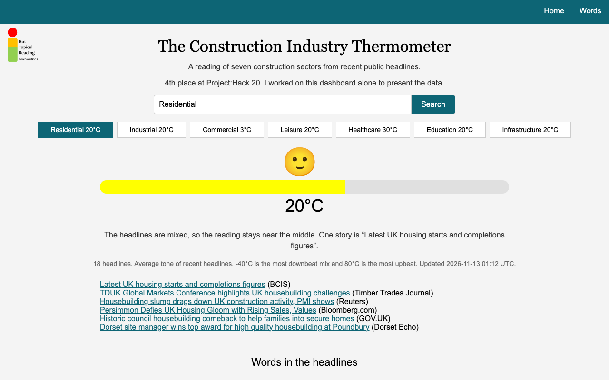
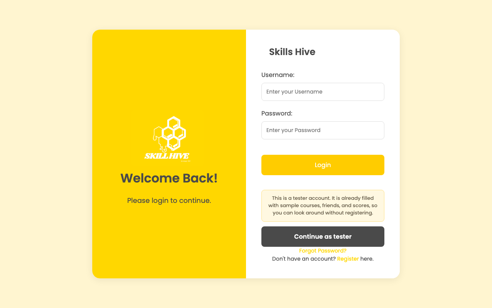

Newcastle · Leicester
Noreen Alnageeb.
Software Data AI
First-class Software Engineering at Leicester, now an MSc in Advanced Artificial Intelligence at Newcastle. I build software, analyse data, and train models.
Skills
Spoken
Both fluent.
Data
Software
Cybersecurity
Work
Data

Street crime, 2023
About 1.1 million Metropolitan Police records. A random forest predicts the monthly count in each small area, and clustering finds five profiles.

Disease spread
Three views of a simulated airborne disease across Manchester: severity, agreement across four runs, and a change in wind.
CO₂ emissions
A 2002 emissions map, Japan’s population against emissions, and 2001 against 2002.

Construction thermometer
A dashboard I built alone. Seven construction sectors, read from public headlines.
Cybersecurity
Pair work with Muhammad Abdullah Malik.

Network security
Four teaching captures. Each one is a normal protocol, then the weakness in the packets.
Software

Skills Hive
Courses, friends, and a game. I built the dashboard, the course page, HexaHive, and the chatbot.


Course manager
An Android app for courses and enrolled students, with the same screens in the browser.
University database
With Ajan Mudey and Aisha Tasneem Muhammad. Departments, staff, students, and courses.
Project allocation
Change the choices, then allocate. The page runs the same steps as the C++ program.

Sites

GreenBrighton
Eco-friendly places in Brighton and Hove, shaped by six interviews and built to WCAG 2.1 AA.

Experience
Database lab assistant
University of Leicester. Weekly labs for 100+ students: SQL, schema design, ER modelling, and normalisation.
Computer architecture lab assistant
Two terms at Leicester, about 20–40 students a week, taking system concepts apart into clear steps.
Business and financial computing lab assistant
First-year labs at Leicester, on data-driven tasks and clear write-ups.
Peer mentor
Voluntary. Fifteen first-year students, across two years, on study planning and settling into Leicester.
Hackathons
First place at the IBM CIC Computer Science Society hackathon, in a team, on a prototype for international students. Fourth place at Project:Hack 20 for the construction dashboard.
Contact
Arabic and English. Happy to talk about a software role, a data role, an AI role, or the work above.